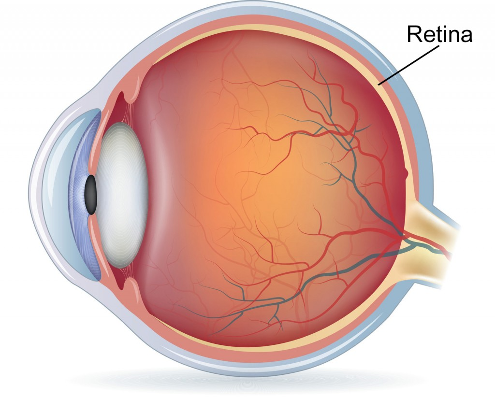
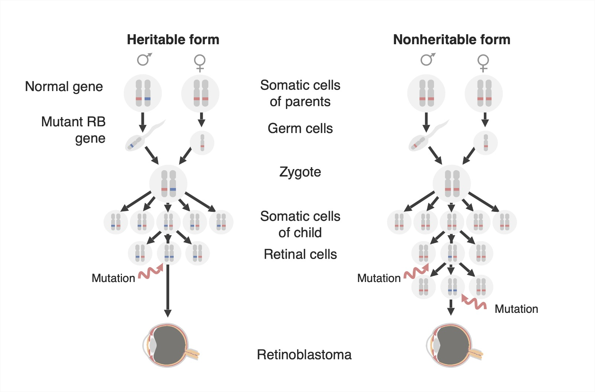
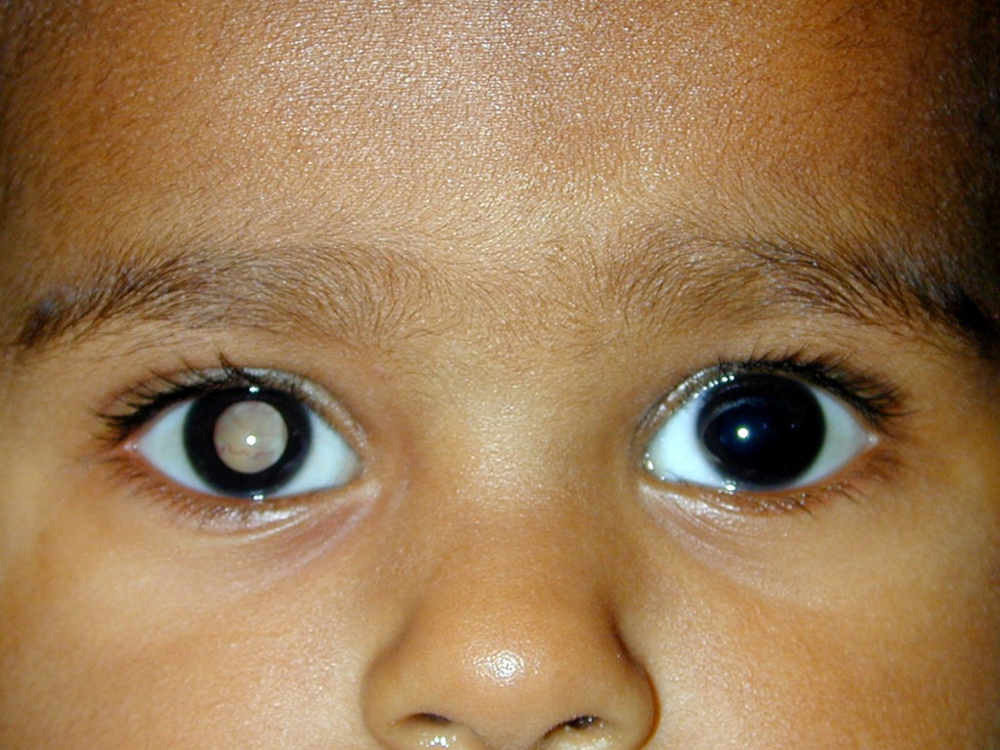

O retinoblastoma é um tipo de câncer ocular que se desenvolve na retina. É mais comum em crianças pequenas, geralmente com idade inferior a 5 anos, podendo ocorrer devido a uma mutação genética hereditária ou de forma esporádica, sem uma causa conhecida. Compreender os sintomas, o diagnóstico e as opções de tratamento para o retnoblastoma é fundamental para garantir o melhor resultado possível para as pessoas afetadas por essa doença. Aqui, você encontrará informações relevantes sobre o retinoblastoma, principais esclarecimentos, processo de diagnóstico e as várias opções de tratamento disponíveis. Sobre a retina e seu papel na visão A retina é uma camada de células que reveste a parte posterior do nosso olho. Ela é formada a partir de um tecido neural embrionário, conectado diretamente ao nosso cérebro pelo nosso nervo óptico. A função principal da nossa retina é detectar a luz e enviar sinais ao cérebro para que você consiga enxergar as imagens.
O retinoblastoma ocorre em aproximadamente 1 a cada 15.000 crianças. A idade média no diagnóstico é de 18 a 20 meses; média de 12 meses para crianças com doença bilateral e 24 meses para crianças com doença unilateral. Em 95% dos casos, o tumor surge antes dos cinco anos de idade. Segundo dados governamentais, 400 novos casos de retinoblastoma são registrados por ano no Brasil. Desse modo, é essencial que os pais estejam atentos a qualquer sinal de alerta e procurem atendimento médico imediatamente caso suspeitem de retinoblastoma.
Reflexo branco no olho: Também conhecido como leucocoria, é um dos primeiros sinais visíveis do retinoblastoma. Em condições normais, o reflexo pupilar é de cor vermelha quando uma luz é direcionada para o olho de uma pessoa. No entanto, nesse caso, o reflexo pupilar pode aparecer branco, amarelo ou dourado. Esse reflexo branco pode ser observado em fotografias tiradas com flash, por exemplo. Portanto, se, ao tirar fotos com flash do seu filho, o reflexo da pupila aparecer como falamos acima, busque ajuda médica imediatamente. IMAGEM DOS OLHOS DA CRIANÇA Mudanças na visão: Crianças com retinoblastoma podem experimentar alterações na visão, como visão turva, visão dupla ou perda parcial da visão. Essas mudanças podem ocorrer gradualmente ou de forma repentina. Dor nos olhos: Em alguns casos, as crianças com retinoblastoma podem reclamar de dor nos olhos. É importante prestar atenção a qualquer queixa de desconforto ocular e procurar orientação médica. Vale ressaltar que nem todos os casos de reflexo branco no olho, mudanças na visão ou dor nos olhos indicam retinoblastoma, entretanto, esses sintomas devem ser levados a sério e investigados por um oftalmologista especializado em oncologia ocular.
O diagnóstico precoce é fundamental para garantir o melhor resultado possível para a criança e, em último caso, prevenir a cegueira como consequência. Os médicos utilizam uma combinação de exames clínicos, exames de imagem e, em alguns casos, biópsias para confirmar o diagnóstico de retinoblastoma. Durante um exame clínico, o oftalmologista examinará cuidadosamente os olhos da criança em busca de sinais de retinoblastoma. Isso pode incluir o uso de um oftalmoscópio, um instrumento que permite visualizar a retina e procurar a presença de tumores. Assim como também exames de imagem, como ultrassonografia ocular, tomografia computadorizada ou ressonância magnética, podem ser realizados para avaliar a extensão do tumor e determinar se há metástase ou disseminação para outras partes do corpo. Em alguns casos, uma biópsia pode ser necessária para confirmar o diagnóstico de retinoblastoma. Durante uma biópsia, uma pequena amostra de tecido é retirada do tumor ocular e examinada em laboratório para identificar as células cancerígenas.
A descoberta do retinoblastoma na filha do apresentador Tiago Leifert foi resultado de um acompanhamento oftalmológico cuidadoso e do reconhecimento de sinais de alerta pelos pais. Durante uma sessão de fotos em família, eles notaram que o reflexo nos olhos da criança não era o usual vermelho, mas sim um reflexo branco. Preocupados com essa observação, procuraram imediatamente um oftalmologista especializado em saúde infantil, que realizou exames detalhados e confirmou o diagnóstico de retinoblastoma. Esse caso demonstra a importância da conscientização sobre os sinais visuais anormais, como o reflexo branco, e destaca a necessidade de buscar cuidados médicos especializados para garantir um diagnóstico precoce e um tratamento adequado para essa condição. Tiago Leifert e Daiana Garbin promoveram então uma campanha de conscientização sobre o retinoblastoma: a campanha “De Olho nos Olhinhos”. (saopauloparacriancas.com.br)
O tratamento do retinoblastoma é altamente individualizado e depende de vários fatores, como a localização e o tamanho do tumor, a extensão da doença e a presença de metástase. As opções de tratamento podem incluir cirurgia, radioterapia, quimioterapia e terapia direcionada. Cirurgia: A cirurgia é frequentemente usada para tratar o retinoblastoma, principalmente quando o tumor está localizado e não se espalhou para outras áreas do olho ou do corpo. Existem diferentes tipos de cirurgia usados no tratamento do retinoblastoma, incluindo:
A quimioterapia pode ser usada antes da cirurgia para reduzir o tamanho do tumor, após a cirurgia para eliminar células cancerígenas remanescentes ou como tratamento principal em casos avançados. Terapia direcionada: A terapia direcionada é uma forma de tratamento mais recente que visa atacar as células cancerígenas de forma específica, poupando as células saudáveis. No caso do retinoblastoma, a terapia direcionada pode envolver o uso de medicamentos que bloqueiam o crescimento das células cancerígenas.
Essa modalidade de tratamento é geralmente utilizada quando outras opções não são eficazes ou quando o tumor é resistente à quimioterapia ou radioterapia convencional. Porém, a terapia direcionada ainda está em fase de pesquisa e não é amplamente utilizada como opção de tratamento padrão para o retinoblastoma.
O prognóstico do retinoblastoma pode variar dependendo de vários fatores, como a extensão da doença, a resposta ao tratamento e a presença de mutações genéticas específicas. No entanto, quando diagnosticado precocemente e tratado adequadamente, o retinoblastoma geralmente tem um bom prognóstico.
As taxas de sobrevida para o retinoblastoma são geralmente altas, com uma taxa de sobrevida de 95% ou mais em países com acesso a tratamentos modernos. Muito embora seja importante lembrar que cada caso é único e que o tratamento e o prognóstico devem ser discutidos individualmente com a equipe médica